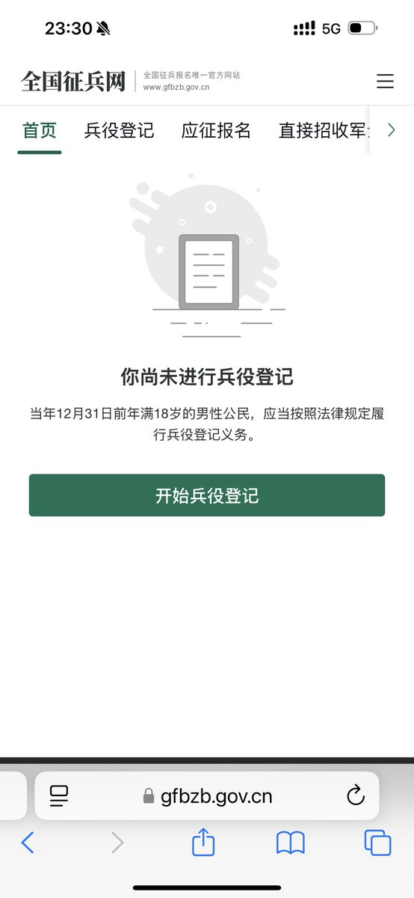

北雁冬翼（simone luxem）🏳️⚧️🏳️🌈🔬
@Simone_Luxem
对我来说正好相反，却殊途同归吧
自己从小到大，所以感觉到的在绝大多数情况下都是“不被赋予期望”吧
而偏巧无论是家里还是学校，都从来不乏在自己身上投下阴影的人；而自己活在它们的阴影下，憧憬着，渴望着，嫉妒着…
想要有一天自己也可以做到很多事情…
想要有一天自己也可以做到别人做不到的事情..

🐱🍊静静🍊🐱（泰补190一盒清仓版）
@quitee123
发现自始至终，我就没有“被登记”兵役，虽然可能没什么实际意义，但是心里确实好开心，这种快感来自于反抗“被指派性别为男性的责任”。😘😘😘
虽然我知道，就算我没有登记兵役，真正发生战争，让我去送死的命运是逃不掉的。 https://t.co/Y5KQrKfkPA